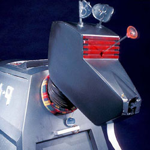

| Home | The Doctors | The Companions | The Villains |
|
|||
|
K-9K-9 is the name of several fictional robotic canines (dogs, the name being a pun on the pronunciation of "canine") in the long-running British science fiction television series, Doctor Who, first appearing in 1977. K-9 has also been a central character in three of the series television spin-offs: the one-off K-9 and Company (1981), The Sarah Jane Adventures (2007–2011) and K-9 (2009–2010). Although not originally intended to be a recurring character in the series, K-9 was kept in the show following his first appearance because he was expected to be popular with younger audiences. There have been at least four separate K-9 units in the series, with the first two being companions of the Fourth Doctor. Voice actor John Leeson has provided the character's voice in most of his appearances, except during Season 17 of Doctor Who, in which David Brierley temporarily did so. The character was created by Bob Baker and Dave Martin, to whom rights to the character still belong; consequently, Baker's spin-off series K-9, which is not BBC-produced, cannot directly reference events or characters from Doctor Who, though it attempts to be a part of that continuity. Within the series' narrative, K-9 is a robot dog acquired by Doctor Who's title character in the 1977 serial The Invisible Enemy. The first two incarnations of the character travelled alongside the fourth Doctor (portrayed by Tom Baker) until 1981. In these stories, K-9 proved useful for the powerful laser weapon concealed in his nose, his encyclopaedic knowledge and his vast computer intelligence. By 1981, each of the two models of K-9 which travelled alongside the Doctor had been left with one of the Doctor's female companions. The character subsequently transitioned into spin-off territory. Producers hoped K-9's popularity with children would launch the series K-9 and Company, led by actress Elisabeth Sladen in the role of companion Sarah Jane Smith alongside a new K-9. In 2006, K-9 reappeared in the revived series of Doctor Who. Although the character's appearances in the 2007 spin-off The Sarah Jane Adventures were hampered by the concurrent development of the K-9 spin-off, the character began to appear full-time in both K-9 and The Sarah Jane Adventures, depicting adventures of the original K-9 Mark I and of Mark IV, respectively. |